Keeley and Kevin's Blog
Coastal Maine
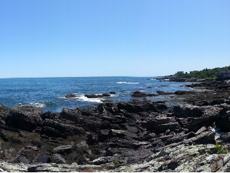K&K at Palace Playland
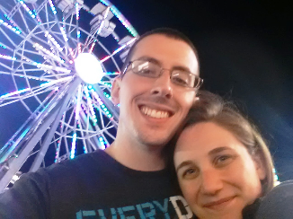Old Orchard Beach, ME
June 24-26, 2016
Old Orchard Beach was the best trip. We got to the campsite around 7pm on Friday night, which only gave us about an hour and a half to set up camp before dark. We were able to do so in time, but ended up cooking and eating dinner in the dark.
The next morning, we got up, got dressed, and cooked breakfast before hitting the road - this time, on our bikes. The original plan was to bike to Portland, ME via the Eastern Trail. The off-road portion of the trail was easy and beautiful. There were ponds, rivers, forrests, so many beaufitul things. However, once the trail was back on the road, the signage was terrible. We got lost.
We somehow ended up on a different path that goes along the ocean, which was gorgeous. We eventually had to stop to check Google Maps to figure out where we were and how to get to Portland. As it turns out, we ended up 15 miles off course and had to bike up a ton of hills to get to Portland after ending up so far off course that we couldn't even get back to the Eastern Trail.
By the time we got to Portland, our legs were on fire so we were thankful to sit and each lunch by the harbor. We had Lobster Rolls from Portland Lobster Company, a cute little walk-up-window restaurant. We walked around the city for about 2 hours before deciding to head back.
This time, we were smart and checked Google Maps to determine where we ended up getting off course. We were able to figure it out and made sure we stayed on course for the ride back. When we got back to camp, we showered, made dinner, and got ready to head to Palace Playland - an amusement park that is located on the beach itself.
We got into the car to go to the amusement park... and the car would not start. This would be the first of many car problems that summer. Our lovely French-Canadian neighbors gave us a jump and we were on our way. We did have to drive around for about 45 minutes before we could turn off the car, but we still had plenty of time to ride rides since the park stays open until midnight on weekends during the summer.
The park was amazing and the town was bumpin'. There were people everywere and tons of food to eat. We stayed there until 11:30pm or so before heading back to camp to get some sleep. Thankfully, the car did start and we were able to make it back to camp without any issues.
The next day, we woke up, cooked breakfast, packed up all of our things, and headed to the beach. When we got into town, we realized there was a pirate-themed mini-golf course. Kevin loves mini-golf so of course we had to go play. We played one round on the larger of two courses. We were then awarded a second round for free and got to play again on the smaller course. It was a ton of fun! Finally, we walked along the pier and then relaxed on the beach for a few hours before heading back to Boston.
Seneca Lake
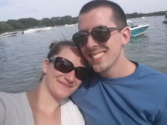Engagement Cake
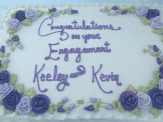Engagement Party

Canandaigua, NY
July 2-9, 2016
We went home to where we grew up for an entire week. It was relaxing and exhausting at the same time. There is a lot going on when there is so much family to see and so little time. Plus, we got severely delayed both going home to Rochester and coming back to Boston and airports are always tiring. Mostly, however, we spent time on my dad's Seneca Lake property and riding in my uncle's boat, so that was really nice.
For the 4th of July, we went to the American Legion in the town where my dad grew up. They host a carnival every year and launch the fireworks along the bay overlooking the lake. It's really fun and very beautiful.
The highlight of the trip was the wonderful engagement party that my aunt, my dad, and Kevin's parents hosted for us. It took place at my aunt's house, which has a wrap-around porch overlooking Canandaigua Lake. The setting was like a dream and seeing all of our family all in one place was exciting. Everyone had a great time and looks forward to the wedding (August 18, 2018).
Ocean, Edgartown
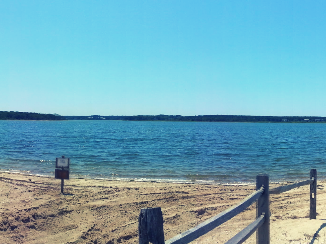Ocean, Falmouth
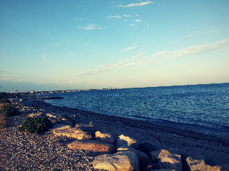Biking to Falmouth
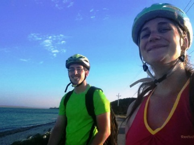Martha's Vineyard, Cape Cod, MA
July 22-24, 2016
This trip certainly had its ups... and definitely had its downs. Kevin took a half day off of work and I worked "from home" in the car on the way because we knew if we didn't leave early, we'd get stuck in Cape Cod traffic for hours. Thankfully, we got to the campsite around 4pm, leaving us plenty of time to set up camp, eat, and relax.
We stayed at a campground in Falmouth, MA and, while the campground itself was nice, the specific site we had was not the best. It was low-ground right beneath a small cliff. When it stormed like crazy on both Friday and Saturday nights, all the water ran down the cliff and into our campsite. Thankfully, we aren't novice campers so we came prepared and managed to stay dry.
On Saturday, we got up, cooked breakfast, and got on our bikes. There is a fantastic bike path that goes all through the Cape. We rode this trail from the campground to Woods Hole. We then walked around Woods Hole for a little bit before catching the ferry out to Martha's Vineyard.
The ferry ride was nice, but the bike rides we took on the vineyard were the highlights. We docked and got off in Oak Bluffs and then biked along a bike path to Edgartown. The bike path is all along the coast of the island and I'd never seen water so beautifully blue. About halfway between Oaks Bluff adn Edgartown, we made a pit stop for some beer at a cool brewery called Bad Martha. That was a nice little pick-me-up along the way.
We got ice cream in Edgartown and walked around the town for about an hour before heading back to Oak Bluffs. The ride back was just as easy as the ride there. When we got back to Oaks Bluff, we ate dinner at Nancy's and took the ferry back to Woods Hole. From there we biked back to camp and relaxed for the rest of the evening.
As usual, we got up, cooked breakfast, and packed up the campsite. The plan was to spend Sunday on the beach in Falmouth in that gorgeous blue water. We got in the car all ready to go to the beach only to see a horrible message on the dashboard saying that the car was in "Limp home mode." We looked into it and found out that it is caused by a transmission issue. When the car is in "limp home mode," it won't shift higher than second gear and it won't go faster than 35mhp. We decided to head straight home instead of to the beach. It took us twice the time and we got honked at a lot. Come to find out, it was a known issue with the car's computer, which was under warranty, but that's a whole other story for another time.
Easton's Beach
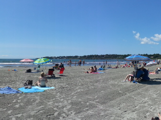Downtown Newport
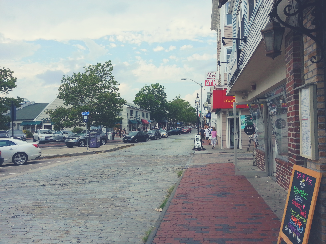Ocean Avenue
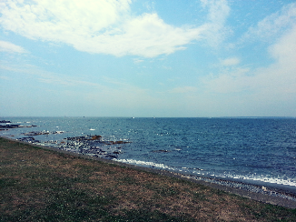Newport, RI
August 5-7, 2016
We drove to a campground about 20 minutes outside of Newport and got there around 7:30pm. We had to set up at dusk so it was a little hard to see. The site itself was tiny and rocky. Even with a small 4-person tent, we could barely fit everything on the tiny site, but we made do for the night and decided we'd ask for a different site in the morning.
That night, we went to bed around 10pm. About an hour later, the people who rented the site next to us showed up with their two small kids. They were SO loud, it was obnoxious. One of the kids even tried to get into our tent while we were sleeping. I woke up and yelled at her while her parents did absolutely nothing about it. One more reason to move to a different site the next day.
So in the morning, that's exactly what we did. We moved to a much softer and much bigger site where we could lay out all of our things before hitting the road. This time, we had to drive to a park where we could start our bike ride since the campground was so far away from Newport itself.
We biked along Ocean Drive, which was beautiful. Even though the day was grey and it rained a little bit, the water was perfectly blue and the scenery was spectacular. There was even some type of kite flying event that we passed and the kites were really cool. At some point along our ride, we go to the Cliff Walk. We locked up our bikes and walked along the trail for a little while, high above the ocean on a narrow path. It was exhilerating.
It was still pretty early when we finished the bike route - about 5:30pm. Normally, we bike until 6 or 7. We headed back to the campsite and relaxed. We even had enough time to cooke dinner, make smores, and play card and board games before going to bed.
We packed up the site in the morning, as usual, and headed to Easton's Beach. We relaxed on the beach for a few hours and then headed to our surfing lesson. Did I forget to mention that we'd scheduled a surfing lesson? It was awesome and the waves were great! I was horrible at it, but I love the water so I still had fun. Kevin was great at it. He picked it up right away. Sadly, we had no one else there to take pictures of us, but that's okay. When we were done surfing, we were so wiped out that we decided to grab a quick lunch in town and then head home.
Old Silver Beach
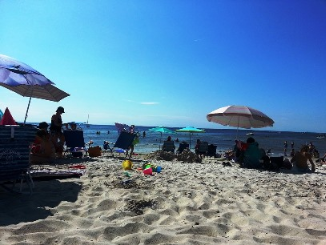Old Silver Beach
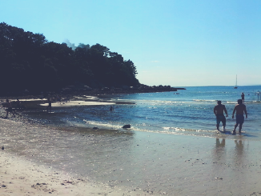Old Silver Beach
Falmouth, MA
August 20, 2016
This was a simple trip to Old Silver Beach in Falmouth, Cape Cod, MA to make up for the time when the car gave us troubles causing us to go home without going to the beach. The water wasn't quite as blue on that day so I was a little bummed, but it was nice relaxing day trip none-the-less. Sadly, it was our last beach trip of the summer because school started up again a week later. Since then, we haven't traveled much but intend to take similar camping/biking/beach trips again this upcoming summer once the semester is over and we have the time. The countdown begins... until the end of the Spring 2017 semester!